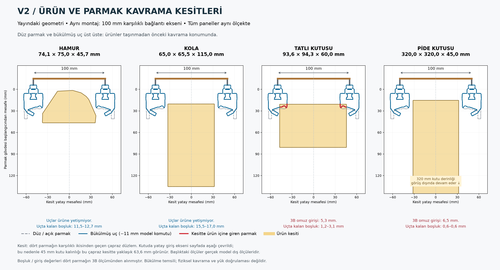
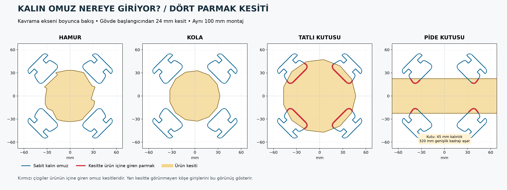

1. Yan kavrama kesitleri
Tam boy aç · Yan kesit
Hamur ve kolada uçların ürüne yetişmediği boşluklar görülüyor. Kutu yatay kavranıyor; karşılaştırma için çizimde giriş yönü aşağıya çevrildi.
AUTOKITCH / ROCHU / V2
Dört ürün aynı ölçekte. Yayındaki V2'nin mevcut 100 mm karşılıklı parmak bağlantı ekseni korunuyor. Bu ölçü, parmakların arasındaki net boşluk değildir.
Telefonda ayrıntıları görmek için “Tam boy aç” düğmesine basıp iki parmağınla büyüt.

Hamur ve kolada uçların ürüne yetişmediği boşluklar görülüyor. Kutu yatay kavranıyor; karşılaştırma için çizimde giriş yönü aşağıya çevrildi.

Tatlı ve pide kutusunda kırmızı çizgiler, kalın omzun ürünün içine giren kısımları. Bu köşeler ilk resmin orta kesitinde görünmeyebilir.